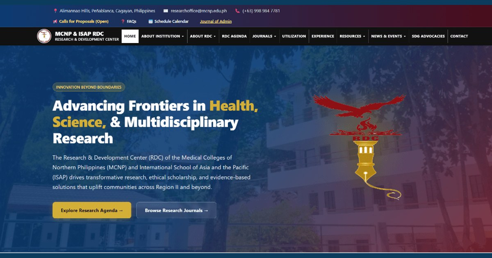

MCNP–ISAP Research and Development Center Develops Digital Platform to Improve Access to Research Information

The Research and Development Center (RDC) of MCNP and ISAP has developed an institutional website to centralize research-related information, publications, resources, announcements, and activities in one accessible online platform.
Read full article